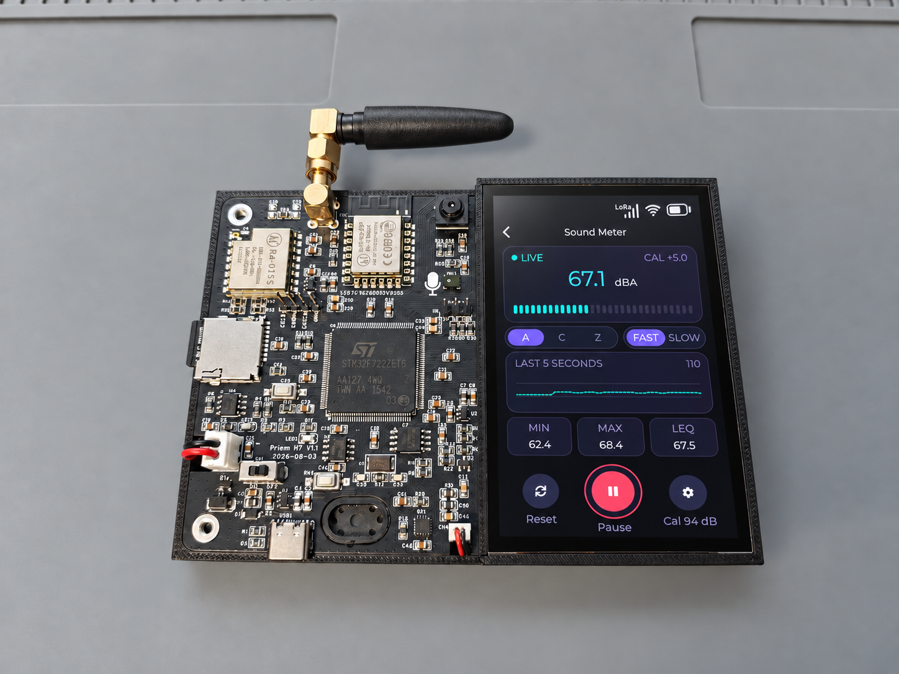
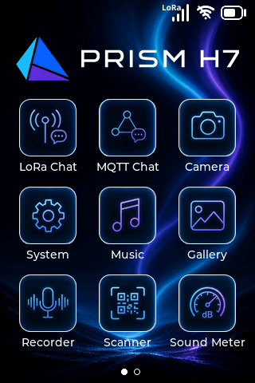
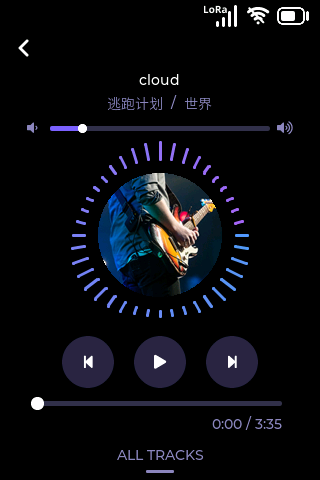
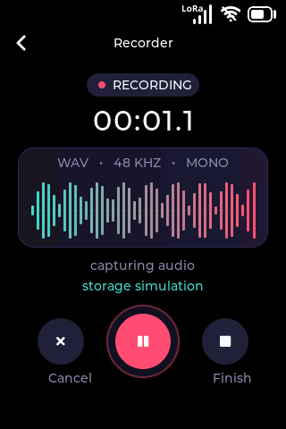
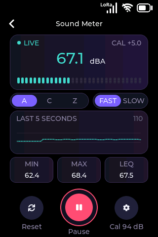
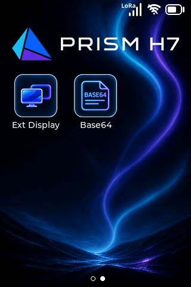

Cortex-M7 主控
基于 STM32H723ZGT6，配合 FreeRTOS 多任务架构，承载图形交互、音频处理与外设应用。
Touch · Audio · Vision · Wireless
从触摸交互到声音、图像与无线通信，把嵌入式想法变成可操作、可感知的设备。Prism H7 将丰富外设与完整应用界面集成在一块开发板上，适合学习、验证想法与构建产品原型。

Key Features
基于 STM32H723ZGT6，配合 FreeRTOS 多任务架构，承载图形交互、音频处理与外设应用。
320 × 480 竖屏界面，配合电容触摸、应用桌面和主题设置，构建完整的交互体验。
8 MiB PSRAM 用于显示和图像缓冲，16 MiB NOR Flash 存放字体、图片、声音及用户文件。
板载数字麦克风与 MAX98357A 音频功放，提供音乐播放、录音回放和分贝仪应用。
集成 ESP8266 Wi-Fi 模块和 LoRa 无线模块，提供 Wi-Fi 配置、MQTT Chat 与 LoRa Chat 界面。
工程支持 GC0308 相机，提供相机预览、拍照与图库浏览，便于学习图像采集和显示。
支持将固件、中文字体、图片和声音打包到同一升级文件，统一更新程序与界面资源。
使用 CMake + Ninja 与 Arm GNU 工具链，配套编译、打包和 J-Link 烧录脚本。
工程内置 SKILL.md 开发说明，并提供基于 SDL2 的界面模拟器，方便迭代 UI 与应用逻辑。
Applications
以下为开发板实际界面截图。以音乐、录音和声音可视化等应用为起点，理解驱动、任务与 UI 如何协同工作。

以图标组织应用，结合状态栏与触摸交互，呈现接近手持设备的操作体验。

音乐播放与中文歌曲信息显示，将音频解码、播放控制和图形界面串联起来。

通过板载数字麦克风采集声音，配合录音管理与回放界面，体验完整音频应用。

以实时读数、趋势图和统计信息呈现声音变化，支持计权与响应模式选择。

桌面整合通信、相机和实用工具入口，便于在同一套 UI 框架下继续扩展。
Board Gallery
电路与屏幕并排布局，观察界面的同时也能接触和调试硬件。点击照片可查看原图。
Specifications
| 参数 | 内容 |
|---|---|
| 主控 | STM32H723ZGT6 · Arm Cortex-M7 |
| 显示与触摸 | 320 × 480 像素 · 电容触摸 · LVGL |
| 片外 RAM | APS6404L · 8 MiB PSRAM |
| 片外 Flash | W25Q128JV · 16 MiB NOR Flash |
| Wi-Fi | ESP-12F / ESP8266 · 2.4 GHz |
| LoRa | 板载 LoRa 模块 · 配套无线聊天应用 |
| 音频 | MP34DT05 数字麦克风 · MAX98357A 音频功放 |
| 相机 | GC0308 · DCMI 图像采集 |
| 存储扩展 | MicroSD 卡接口 |
| USB | Type-C 接口 · USB Device CDC 虚拟串口 |
| 供电 | USB Type-C · 锂电池接口与 TP4056 充电电路 |
| 软件框架 | FreeRTOS / CMSIS-RTOS V2 · LVGL |
| 开发工具 | CMake + Ninja · Arm GNU Toolchain · J-Link · SDL2 模拟器 |
Development
查看固件工程、驱动实现与应用代码。
使用 build.bat 编译固件，build.bat full 打包固件及片外资源。
使用 build.bat simulator 启动 PC 模拟器，迭代 LVGL 页面与交互。